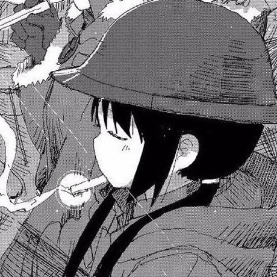

I'm a technology guy. I've been playing with computers since my early life, and with GNU/Linux since I was nine year-old. I always try my best in learning something new while trying to resolve a problem. Most specifically, I prefer not finding only the how, but also the why behind the solution.
I like to keep things simple and avoid overcomplicated logics that have too much going on, and rather prefer going for the cleanest alternative. This applies in many fields; I am really picky regarding my code style and profile appearance; that's why I try to spread the least information around me.
Looking back to the manga and anime part, I started consuming such media just recently. My favorite mangaka so far is Tsukumizu. Although his art and story are mostly pessimistic, I find myself enjoying his way of talking to the reader as if he knew them since forever. My favorite work of his is Shimeji Simulation, along with Girls' Last Tour. They were both heart-touching to me.
I barely listen to music, as you might have seen from my last.fm page, but I am a big fan of the british band Jamiroquai. Along with Acid Jazz, one of the genres I recently started listening more and more is Math Rock. and Drum and Bass, without excluding different Japanese bands of different genres, like frederic or different Vocaloid producers.
As I stated before, I am really keen on contributing to Android Open Source-related projects. That's why most of my (bare) experiences have a relationship to it, and I'd like to keep it like so. With some exception, obviously.